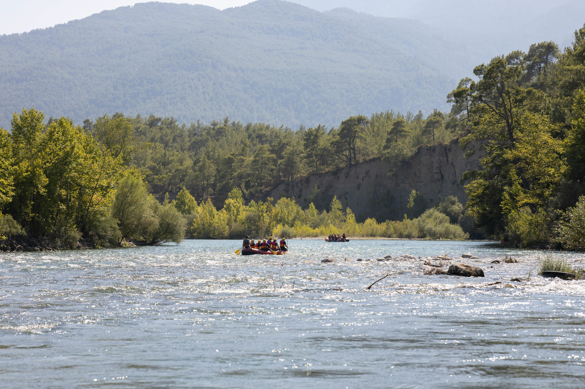

Founded in 2010, Rowing Rafters has been the premier white water rafting expedition for all thrill seekers and those that seek a relaxing experience. Our founder, Andrea Brandon, wanted to bring our guests a one of a kind experience for ages to come. She also loves seeing people having fun and was passionate about bringing family and groups experiencing nature together. Nestled in the Mountain West, Andrea started leading rafting trips to help educate others about the beauty yet responsibility of the rivers.

This educational experience turned into a hobby that soon turned into a business of navigating parties of all kinds into enjoying mother nature.
Due to our growth, we have expanded our service and now offer multiple day adventures. Please check out our offerings and this week's specials. We can cater to your group and indiviual needs. We look forward to sharing our passion with you our guests as we embark on the river together.